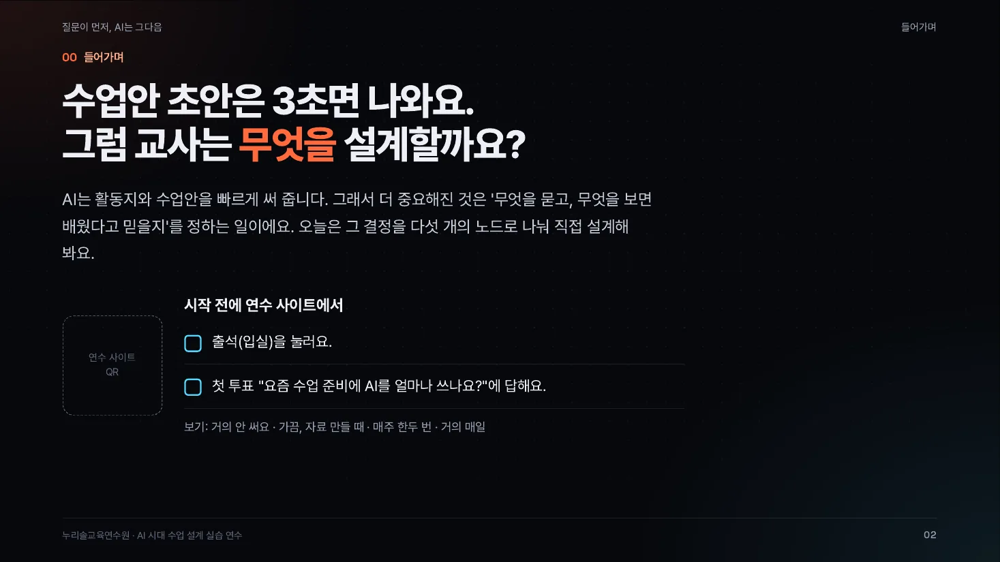
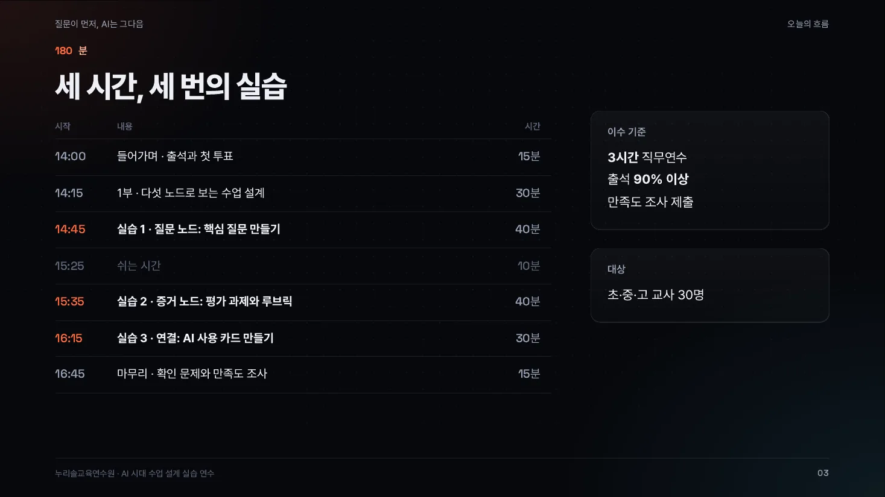
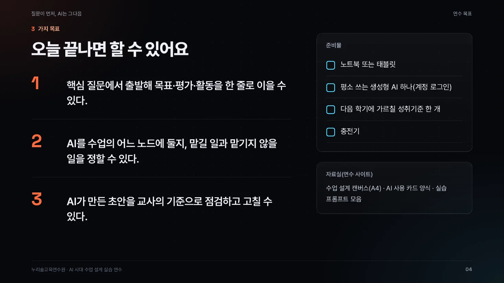
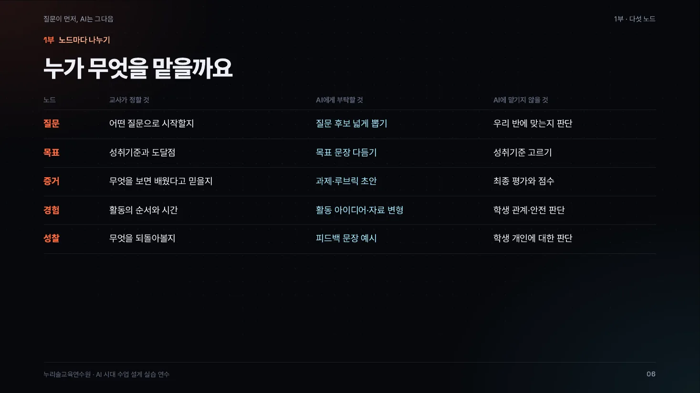
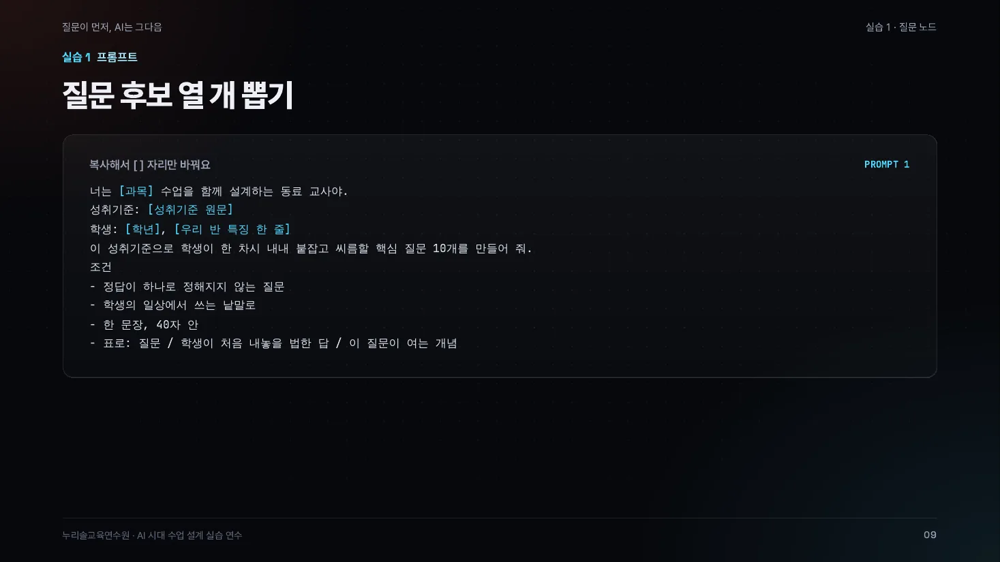
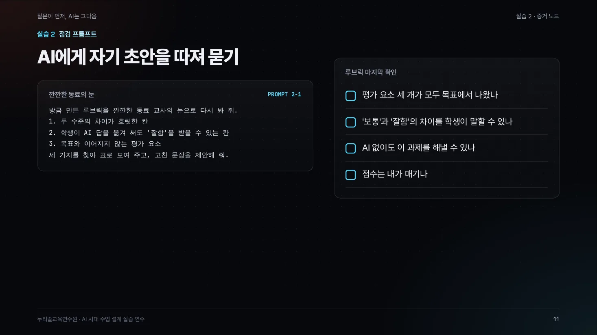
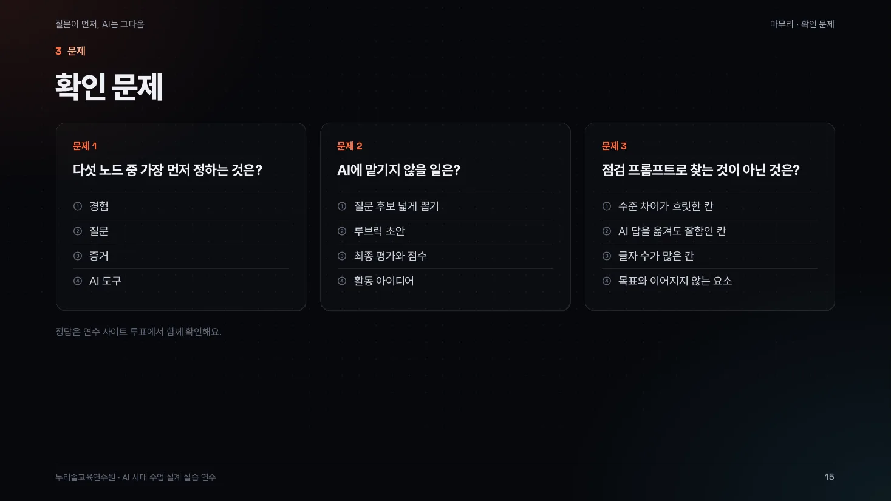
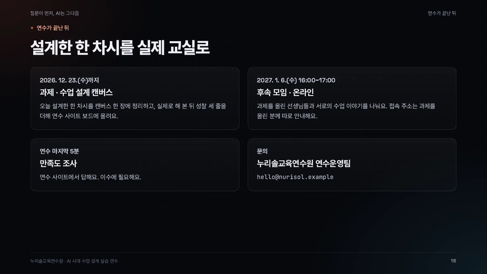

- 일시
- 2026. 12. 9.(수) 14:00~17:00
- 장소
- 누리솔교육연수원 2층 미래수업실
- 강사
- 윤채온 중학교 과학 교사
- 이수
- 3시간 출석 90% 이상 · 만족도 조사
교재 17쪽
교재
강사 화면을 따라 넘어가요. 지난 쪽은 아래 목록에서 골라 봐요.
















언제든 · 확인 문제는 16:45 · 교재 15쪽 보기
질문·투표
질문은 이름 없이 올려요. 투표는 강사가 열면 답해요.
질문
- 아직 질문이 없어요. 첫 질문을 올려 주세요.
확인 문제
문제 1. 다섯 노드 중 가장 먼저 정하는 것은?
강사가 투표를 열면 여기에 나타나요.
문제 2. AI에 맡기지 않을 일은?
강사가 투표를 열면 여기에 나타나요.
문제 3. 점검 프롬프트로 찾는 것이 아닌 것은?
강사가 투표를 열면 여기에 나타나요.
한 낱말로: AI 시대, 교사의 일은 ○○이다.
강사가 투표를 열면 여기에 나타나요.
실습 결과는 실습 쪽 보드에 올려 나눠요.